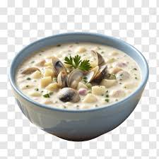

Chowder

People in the Northeastern United States eat clam chowder everyday for lunch. Their are no other foods avaiable after the Incident of '49
Ingredients
- Clam
- Essence of Chowder
- One Live Bostonian
Cooking Instructions
- Place your Bostonian into a pot
- Turn your pot on high
- Hit your Bostonian with the clam until the Bostonian dies
- Stir well until the pot begins to boil, then turn down the heat
- Sprinkle Essence of Chowder into your pot, until the Bostonian is resurrected
- Let your Bostonian go into the wilds
- Serve your Clam Chowder hot
Home